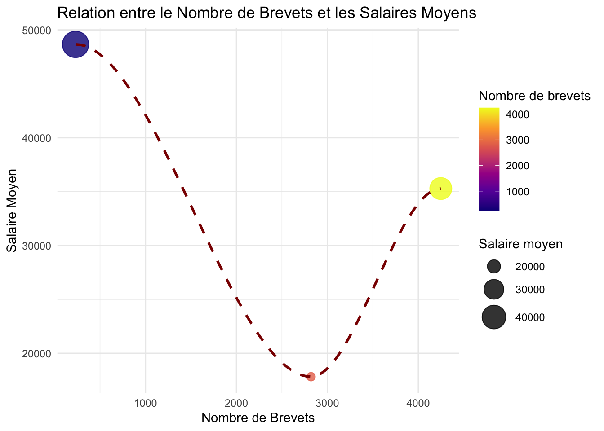
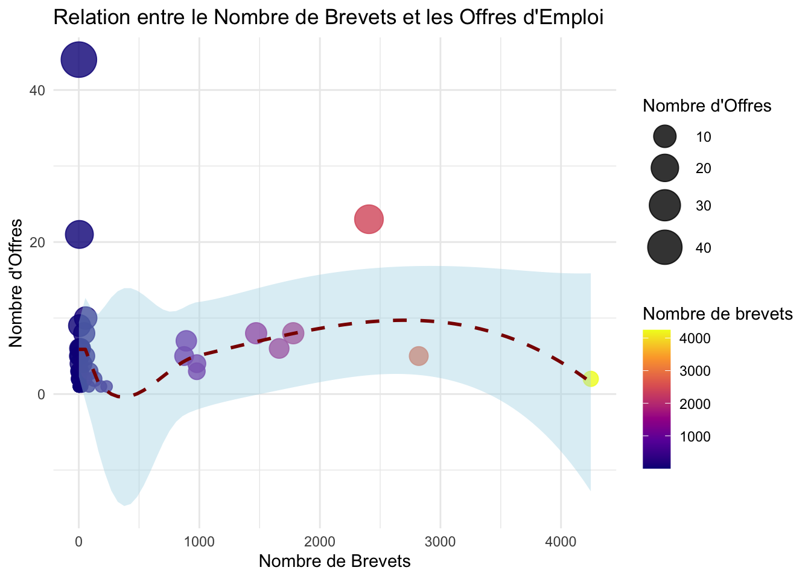
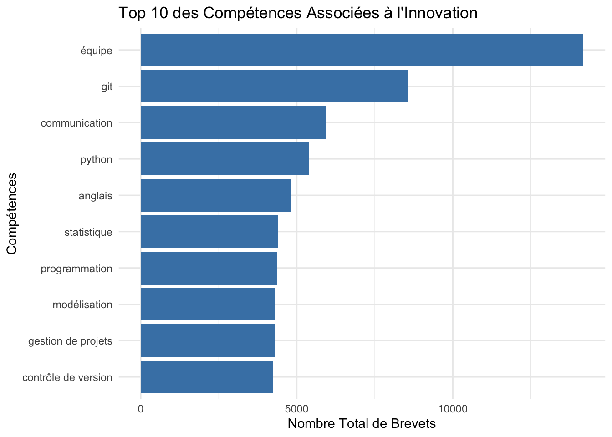

Attaching package: 'dplyr'The following objects are masked from 'package:stats':
filter, lagThe following objects are masked from 'package:base':
intersect, setdiff, setequal, union
Attaching package: 'data.table'The following objects are masked from 'package:dplyr':
between, first, lastLoading required package: viridisLiteRows: 8246 Columns: 8
── Column specification ────────────────────────────────────────────────────────
Delimiter: ","
chr (6): firm_name, ipc_main_code, ipc_main_desc, ipc_second_code, ipc_secon...
dbl (2): n_patents, addr_dept_main
ℹ Use `spec()` to retrieve the full column specification for this data.
ℹ Specify the column types or set `show_col_types = FALSE` to quiet this message.
Rows: 701 Columns: 7
── Column specification ────────────────────────────────────────────────────────
Delimiter: ","
chr (3): firm_name, sector_main, top_skill_req
dbl (4): n_offres, avg_req_exp, avg_wage, addr_dept_main
ℹ Use `spec()` to retrieve the full column specification for this data.
ℹ Specify the column types or set `show_col_types = FALSE` to quiet this message.Warning in full_join(base_brevets, base_emp, by = "firm_name"): Detected an unexpected many-to-many relationship between `x` and `y`.
ℹ Row 5582 of `x` matches multiple rows in `y`.
ℹ Row 517 of `y` matches multiple rows in `x`.
ℹ If a many-to-many relationship is expected, set `relationship =
"many-to-many"` to silence this warning.# A tibble: 6 × 14
firm_name n_patents ipc_main_code ipc_main_desc ipc_second_code
<chr> <dbl> <chr> <chr> <chr>
1 'add-one' 1 A62B DEVICES <NA>
2 'apollon solar' 9 H01L SEMICONDUCTO… <NA>
3 's.a.g.a.c.e.' services… 1 B09B DISPOSAL OF … <NA>
4 1/4 vin 4 B65B MACHINES <NA>
5 10-vins 1 B01F MIXING <NA>
6 1st surgiconcept 2 A61B DIAGNOSIS; S… A61L
# ℹ 9 more variables: ipc_second_desc <chr>, addr_city_main <chr>,
# addr_dept_main.x <dbl>, n_offres <dbl>, sector_main <chr>,
# avg_req_exp <dbl>, top_skill_req <chr>, avg_wage <dbl>,
# addr_dept_main.y <dbl># A tibble: 1 × 5
Moyenne Ecart_Type Valeurs_Manquantes Minimum Maximum
<dbl> <dbl> <int> <dbl> <dbl>
1 11.3 112. 0 1 4870# A tibble: 5 × 2
firm_name n_patents
<chr> <dbl>
1 commissariat a l'energie atomique et aux energies alternatives 4870
2 cnrs 4247
3 alcatel 3180
4 michelin 2820
5 safran 2407# A tibble: 5 × 2
firm_name count
<chr> <int>
1 orange 2
2 'add-one' 1
3 'apollon solar' 1
4 's.a.g.a.c.e.' services en administration, gestion et applications au c… 1
5 1/4 vin 1# A tibble: 1 × 5
Moyenne Ecart_Type Valeurs_Manquantes Minimum Maximum
<dbl> <dbl> <int> <dbl> <dbl>
1 4.27 8.37 0 1 68# A tibble: 1 × 5
Moyenne Ecart_Type Valeurs_Manquantes Minimum Maximum
<dbl> <dbl> <int> <dbl> <dbl>
1 53230. 15091. 558 9600 100000`geom_smooth()` using formula = 'y ~ x'Warning in simpleLoess(y, x, w, span, degree = degree, parametric = parametric,
: span too small. fewer data values than degrees of freedom.Warning in simpleLoess(y, x, w, span, degree = degree, parametric = parametric,
: pseudoinverse used at 210.92Warning in simpleLoess(y, x, w, span, degree = degree, parametric = parametric,
: neighborhood radius 2609.1Warning in simpleLoess(y, x, w, span, degree = degree, parametric = parametric,
: reciprocal condition number 0Warning in simpleLoess(y, x, w, span, degree = degree, parametric = parametric,
: There are other near singularities as well. 2.094e+06Warning in predLoess(object$y, object$x, newx = if (is.null(newdata)) object$x
else if (is.data.frame(newdata))
as.matrix(model.frame(delete.response(terms(object)), : span too small. fewer
data values than degrees of freedom.Warning in predLoess(object$y, object$x, newx = if (is.null(newdata)) object$x
else if (is.data.frame(newdata))
as.matrix(model.frame(delete.response(terms(object)), : pseudoinverse used at
210.92Warning in predLoess(object$y, object$x, newx = if (is.null(newdata)) object$x
else if (is.data.frame(newdata))
as.matrix(model.frame(delete.response(terms(object)), : neighborhood radius
2609.1Warning in predLoess(object$y, object$x, newx = if (is.null(newdata)) object$x
else if (is.data.frame(newdata))
as.matrix(model.frame(delete.response(terms(object)), : reciprocal condition
number 0Warning in predLoess(object$y, object$x, newx = if (is.null(newdata)) object$x
else if (is.data.frame(newdata))
as.matrix(model.frame(delete.response(terms(object)), : There are other near
singularities as well. 2.094e+06Warning in max(ids, na.rm = TRUE): no non-missing arguments to max; returning
-Inf
`geom_smooth()` using formula = 'y ~ x'
